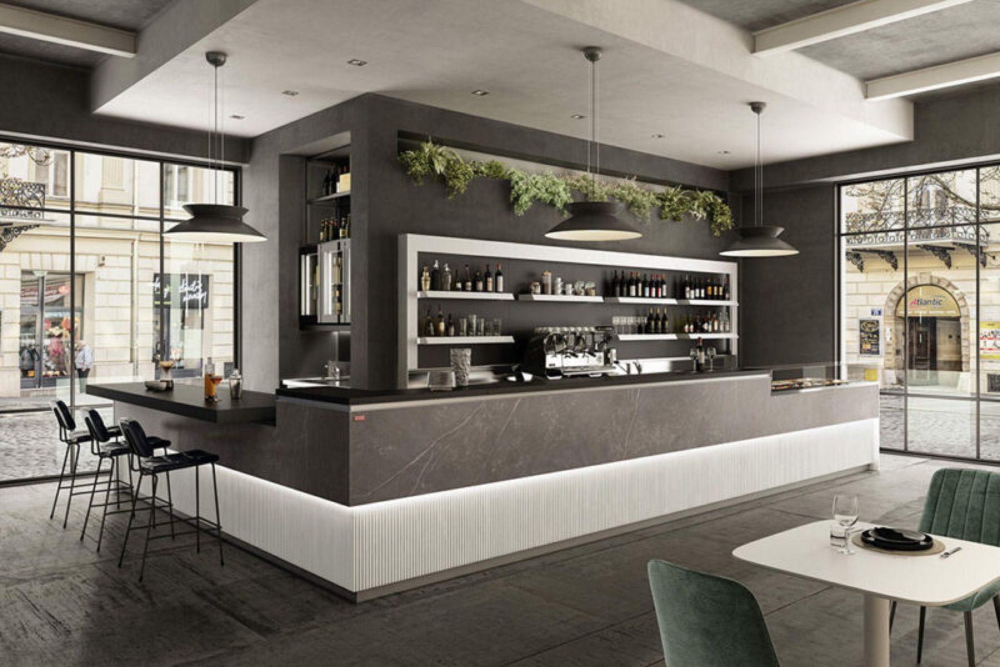
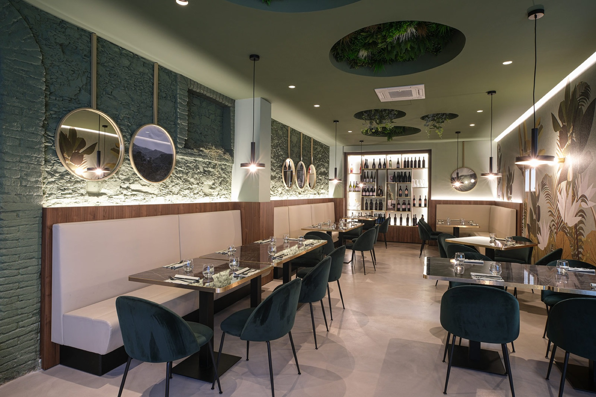

Bar e caffetterie
Tipologie Bar, caffetterie, bakery, cocktail bar, lounge bar, american bar, wine bar, tea room, gelaterie, yogurterie
Progettiamo, produciamo e realizziamo bar, caffetterie, ristoranti, pizzerie, pub e locali. Dal progetto del banco e della sala alla produzione degli arredi, fino alla fornitura delle attrezzature e al montaggio, gestiamo ogni fase della commessa.
In un bar o in un ristorante l'arredo è anche una postazione di lavoro: banco, retrobanco, sala e cucina devono funzionare insieme nelle ore di punta. Per questo progettiamo gli spazi partendo dal flusso reale del servizio e dalle attrezzature necessarie.
Un referente tecnico raccoglie le esigenze del cliente, seleziona arredi e attrezzature dei brand partner, coordina la progettazione, la nostra falegnameria, gli impiantisti e le squadre di posa.
La pianificazione delle attività di fornitura e montaggio viene definita in funzione della data di apertura e delle caratteristiche della commessa, in accordo con il cliente.


Operiamo nei diversi ambiti della somministrazione e dell'intrattenimento, progettando soluzioni di arredo in funzione del servizio, dei coperti e dell'atmosfera di ogni locale.
Tipologie Bar, caffetterie, bakery, cocktail bar, lounge bar, american bar, wine bar, tea room, gelaterie, yogurterie
Tipologie Ristoranti, pizzerie, trattorie, osterie, bistrot, steakhouse, sushi restaurant, hamburgherie
Tipologie Pub, disco bar, discoteche e dance club, live music club, gaming lounge, sale scommesse, bowling, cinema con area food, beach club, stabilimenti balneari
Hai un locale da aprire o rinnovare? Dal banco bar al locale completo di sala e cucina, affianchiamo titolari e progettisti nella scelta e nella realizzazione delle soluzioni più adatte.
Parla con un nostro tecnicoRilievi, analisi del servizio e sviluppo del layout di banco, sala, cucina e dehor. Realizziamo elaborati 2D, progettazioni 3D e render, fino allo sviluppo tecnico ed esecutivo degli arredi.
Banchi su misura con vani per le attrezzature, piani di lavoro idonei e retrobanchi espositivi, disegnati sul modo di lavorare del personale.
Tavoli, sedute, divanetti e boiserie dimensionati sui coperti e sui percorsi; arredi outdoor per terrazze, dehor e stabilimenti balneari.
Macchine da caffè, refrigerazione, cottura e lavaggio dei brand partner, coordinate con il progetto e integrate negli arredi.
Coordiniamo approvvigionamenti, logistica, consegne e montaggio, insieme agli impiantisti, programmando le attività in funzione della data di apertura e delle caratteristiche della commessa.
Selezioniamo materiali, imbottiti e finiture adatti all'uso intensivo e alla pulizia frequente, con la documentazione tecnica richiesta, ad esempio per la reazione al fuoco.
Ogni commessa racconta il nostro modo di progettare, produrre e realizzare locali. Tra le realizzazioni del settore: Jumecitu, Soft Bar e Lido da Pietro. Scopri tutte le realizzazioni.
Gestiamo forniture e realizzazioni di diversa dimensione e complessità, coordinando progettazione, produzione, attrezzature e installazione.
Sì. Integriamo nel progetto macchine da caffè, refrigerazione, cottura e lavaggio, coordinando i fornitori e gli impiantisti.
Sì. Possiamo partire dal progetto del vostro architetto o professionista incaricato, occupandoci di ingegnerizzazione, produzione e installazione. In alternativa, possiamo seguire direttamente la progettazione del locale.
Sì, con arredi outdoor dei brand partner e soluzioni su misura adatte all'uso esterno.
Il cronoprogramma viene condiviso con il cliente prima dell'avvio della commessa, tenendo conto della data di apertura, delle forniture e delle lavorazioni di cantiere.
Sì. Grazie alla nostra falegnameria interna realizziamo banchi, boiserie, sedute e arredi su misura, integrandoli con prodotti e attrezzature dei brand partner.
Collaboriamo con aziende specializzate in arredi e attrezzature per la ristorazione, per offrire soluzioni che uniscono resistenza, funzionalità e design. Selezioniamo prodotti e sistemi in funzione delle caratteristiche di ogni commessa.
Raccontaci la tua commessa. Il nostro team tecnico ti affiancherà nella valutazione delle esigenze, degli spazi e delle soluzioni più adatte.